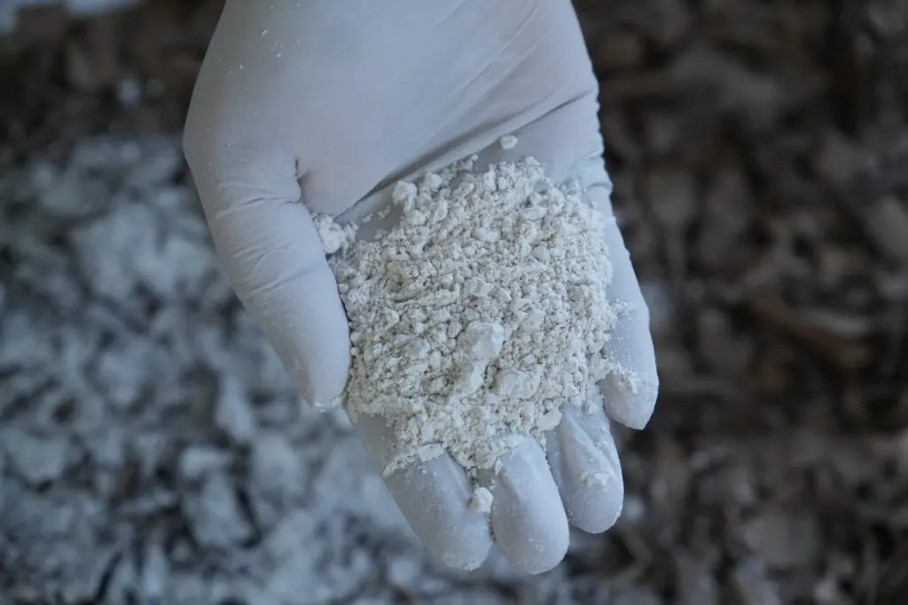
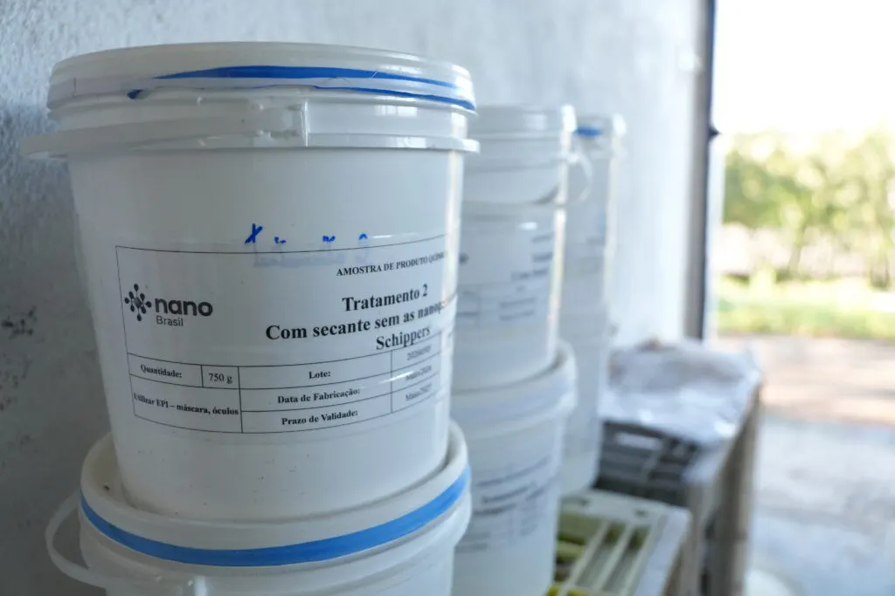

Reducir la humedad de la cama avícola resuelve solo parte de un problema que afecta la salud de las aves, la productividad y el valor comercial de la producción. El amoníaco y la proliferación de microorganismos también presionan el desempeño de los galpones y exigen soluciones capaces de actuar en diferentes frentes.
Para ampliar la eficiencia de los productos ya utilizados en el campo, NanoBrasil desarrolla una formulación que incorpora nanomateriales a los secantes. La tecnología busca preservar la capacidad de absorción y retención de líquidos y agregar propiedades funcionales, especialmente en el control microbiológico de la cama.
El desarrollo reúne la experiencia de NanoBrasil en nanotecnología y el conocimiento de uno de los principales referentes en secantes de Brasil. Ingeniero químico, con maestría y doctorado en las áreas de materiales y medio ambiente, Francisco Souza trabaja desde hace años en la creación de soluciones para diferentes sistemas de producción animal.
“El sector avícola está extremadamente tecnificado, y los problemas van más allá de la humedad y del exceso de líquido en la cama. Estas condiciones traen una serie de consecuencias durante la fase de crecimiento de las aves”, explica.
Más allá del secado
Heces, restos de alimento, agua y materia orgánica se acumulan en la cama a lo largo del ciclo productivo. Sin un manejo adecuado, este ambiente favorece el aumento de la humedad, la liberación de amoníaco y la multiplicación de microorganismos.
Los secantes reducen la presencia de líquido libre y ayudan a preservar las condiciones de la cama. El efecto alcanza el ambiente de crianza, el bienestar de las aves e indicadores relacionados con la productividad.

“Cuando se reduce la humedad, también se interviene en otros parámetros ligados a la calidad de la cama. Esto mejora el ambiente de crianza y trae beneficios para las aves”, afirma Francisco.
La experiencia en el campo, sin embargo, mostró al especialista que la formulación podía avanzar sobre factores que no se resuelven solo con la absorción de líquidos.
“Cuando comencé a estudiar el problema con mayor profundidad, me di cuenta de que el producto necesitaba ir más allá del secado”, relata.
El papel de la nanotecnología
La incorporación de nanomateriales puede transformar el secante en una solución multifuncional. En la escala nanométrica, los materiales presentan una elevada área de contacto y mayor capacidad de interacción con el ambiente en que se aplican. Según la composición y la formulación, pueden agregar propiedades antimicrobianas al producto.
La ganancia está en la complementariedad. Mientras el secante actúa sobre la humedad y contribuye al control del amoníaco, las nanopartículas pueden ampliar la acción sobre la carga microbiológica. La misma aplicación pasa, así, a enfrentar diferentes factores asociados al deterioro de la cama avícola.
“La nanopartícula agrega una función importante al secante porque los dos componentes actúan de manera complementaria. Sola, no ofrece el secuestro de la humedad y del líquido libre. El secante, por otro lado, no resuelve la parte microbiológica de la cama”, explica Francisco.
La nanotecnología también permite trabajar con pequeñas cantidades de material activo y distribuirlo en la formulación. El desempeño, sin embargo, depende de factores como composición, tamaño de las partículas, concentración, estabilidad e interacción con los demás componentes del producto.
Desarrollo NanoBrasil
NanoBrasil conduce el desarrollo para integrar estas propiedades en una solución compatible con la rutina de los productores. La propuesta es perfeccionar una tecnología ya consolidada en el campo, sin alterar su función central ni exigir la sustitución del manejo adoptado en los galpones.
La formulación está en fase de desarrollo y deberá pasar por pruebas para medir su desempeño. Los resultados serán determinantes para evaluar la acción microbiológica, la estabilidad y las ganancias efectivamente proporcionadas por la incorporación de los nanomateriales.

El trabajo refuerza una de las principales aplicaciones de la nanotecnología: modificar el desempeño de productos conocidos y agregar funciones orientadas a problemas concretos de la industria.
Productividad y calidad
Las condiciones de la cama acompañan a las aves durante todo el ciclo productivo. Cuando son inadecuadas, pueden afectar el ambiente de crianza, favorecer problemas sanitarios y provocar lesiones en las patas, parte del pollo especialmente valorada en el mercado externo.
“La pata es una de las partes más valoradas del pollo. Cuando surgen problemas relacionados con la humedad y las condiciones de la cama, esto puede afectar directamente su valor comercial”, explica Francisco.
La posibilidad de reunir absorción, retención de amoníaco y control microbiológico en una misma solución abre un nuevo frente para el desarrollo de secantes orientados a la avicultura. El avance depende ahora de la validación técnica de la formulación y de la medición de sus resultados.
“Todo cuidado con el ave al inicio de su vida se transforma en ganancias más adelante. Por eso, mejorar las condiciones de la cama sigue siendo una de las acciones más importantes para quienes buscan productividad y calidad”, concluye.